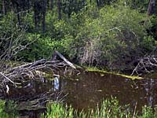
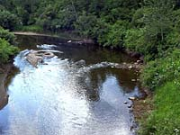
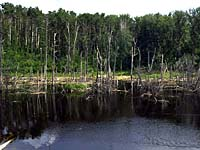

Log Builders
Forest Harvesting
Habitat Requirements
Beaver and Us
Castor canadensis (also known as "beaver")
 Protected by thick layers of fur and body fat, beaver are always ready for a swim. In winter, beaver leave their dome-shaped lodges through a hole in the floor. They swim under the ice to piles of green branches that were gathered in autumn. These food caches must last a family of beaver until spring break-up. Using their sharp teeth and specialized lips, beaver snip branches underwater. Branches are carried back inside where bark and twigs are eaten. Beaver eat and sleep in separate rooms. |
When they reach two years of age, beaver strike out on their own. This journey to find their own territory is made in spring. When creeks are flowing strongly, young beaver can end up a long way from home. |

The next time you visit the forest, sit beside a beaver pond at dusk. If a beaver sees you, it may slap its tail against the water. This sound warns beaver and other animals of possible danger. |
 Beaver are very hard workers. When they decide to live in stream valleys, beaver create ponds by building dams. Dams are built of tree trunks, branches, rocks and mud. The main beaver pond must be deep enough so it does not freeze solid in winter. If this happened, the beaver would likely starve. To keep enough water in their main pond, beaver build both upstream and downstream dams. The upstream dam can be opened to release water when it is needed. The downstream dam helps to hold water in the main pond. |
Once their dams are in place, beaver dig canals and gather materials to build a shelter. Beaver houses and bank dens are plastered with a thick layer of mud. This makes them safer from predators and warmer in winter. The final autumn task of a beaver colony is to cut, haul and store their winter supply of food. |
Forest Harvesting and the Beaver
- Keeping young aspen stands near waterbodies will guarantee
an adequate supply of winter food.
- Culverts installed at stream crossings on timber haul
roads are sometimes blocked by beaver. To prevent road flooding,
these culverts must be routinely unclogged, or covered with wire
mesh barriers.
- Whenever possible, streams will not be crossed in deciduous stands where beaver tend to gather.
 Beaver are highly aquatic mammals. They spend most of their lives within 100 metres of lakes, ponds and streams. Beaver cut trees with their sharp chisel-shaped teeth. Young aspen stands are considered ideal foraging areas. These trees yield the highest amount of branches and twigs for food and building materials. Trees felled in older stands tend to get hung up in the tops of other trees. Shrublands of willow, birch and alder also provide food for beaver. The beaver's summer diet contains aquatic plants such as duck weed, water lilies, and horsetail. |
 European demand for beaver pelts brought the fur trade to all corners of western Canada. By the time wildlife conservationists could sound the alarm, very few beaver were left. After years of protection and stocking programs, beaver began to recover. In recent times, a low price for beaver pelts has reduced beaver trapping. By most accounts, beaver populations today are 10 times higher than they were in the early 1900s. |

Beaver dams often flood farm roads and pastures. To lessen this flood damage, some rural municipalities pay trappers to remove unwanted beaver. |